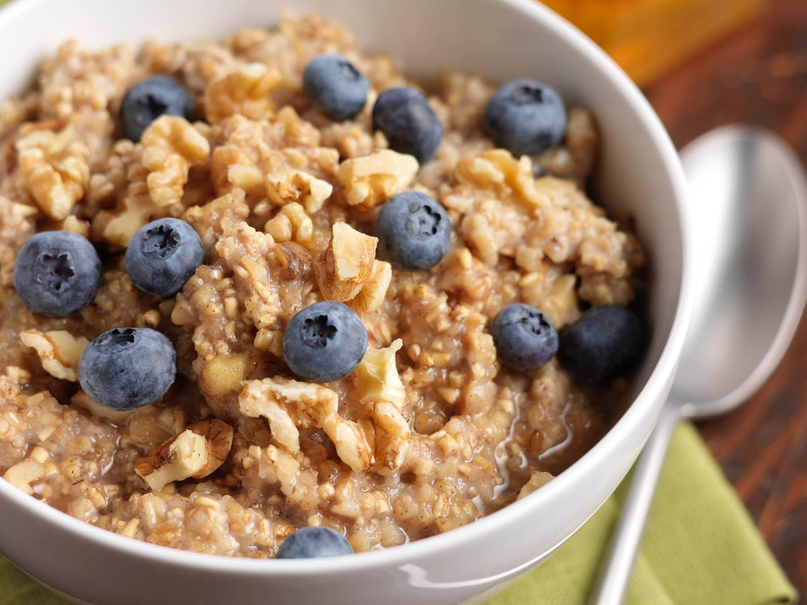

Oatmeal

Description
A quick and easy oatmeal recipe
Ingredients
- 1 cup of quick oats
- 2 cup of milk of choice
- 1 scoop of protein powder
- frozen blueberries
- sugar free syrup
Steps
- Pour milk and oats into a bowl and microwave for 2 minutes
- Add protein powder to the bowl and mix
- Top with frozen blueberries and syrup